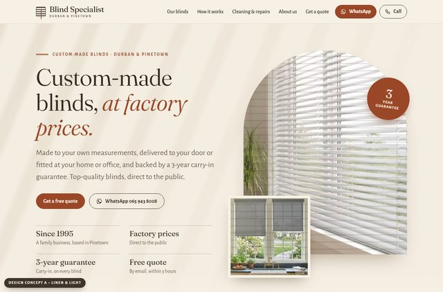

A - Linen & Light
Warm, calm and light: the current site, tidied up.
A soft, linen-coloured home page: custom-made blinds at factory prices, the range by blind type, four simple steps you can do from your sofa, the cleaning and repair service, and a quote form at the end.